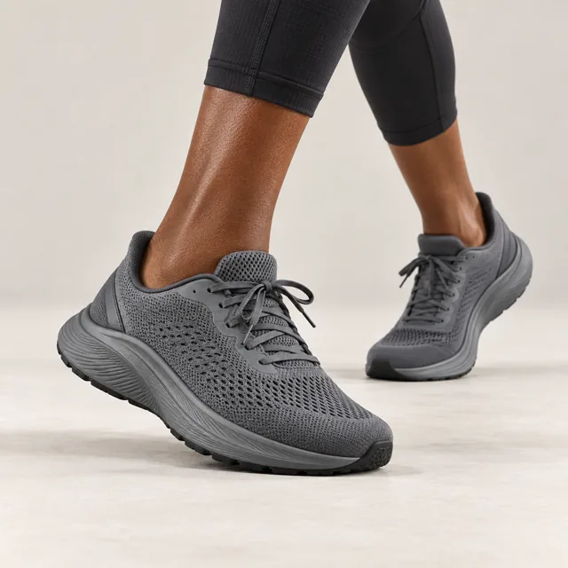
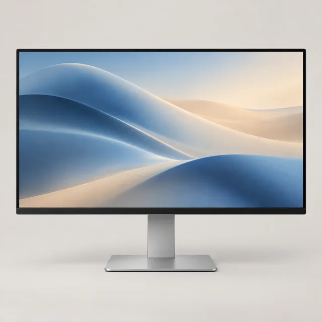
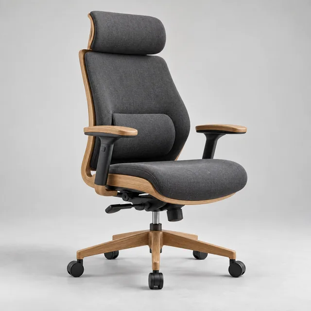

Electronics & tech
Phones, audio, computing
Electronics, furniture, fashion, groceries — whatever you sell. An AI store builder, local payments with no sales fee, and delivery your customers already trust.
Free to start · Built for ZAR, VAT & POPIA · Pay-ins via PayFast, Yoco, Ozow & SnapScan



Built for the brands South Africa makes
Shopify can't offer its own checkout in South Africa — so local sellers pay an extra platform fee on every sale, on top of their gateway. We don't. Your money is yours, in rands, in your account.
Tell MiraiStitch what you sell and it lays out a storefront — hero, products, the lot — in your voice, in ZAR. Then drag, drop and make it yours.
Real courier rates at checkout — lockers, door-to-door or collection. The options your customers already use and trust.
Meet customers where they already shop. Share a secure pay-link in the conversation and the order lands in your dashboard.
Phones, audio, computing
Living, bedroom, office
Labels, resellers, footwear
FMCG, food, household
Fitness, cycling, camping
Parts, tools, trade supply
Skincare, wellness, pharmacy
Prompt the AI builder, or drag blocks yourself. Pick a look, add your logo.
Photos, prices in rands, stock. One at a time or in a batch.
Send your link, post it, sell. Orders land in your dashboard, ready to pack.
Open your MiraiStitch store today and start selling to South Africa by the weekend.